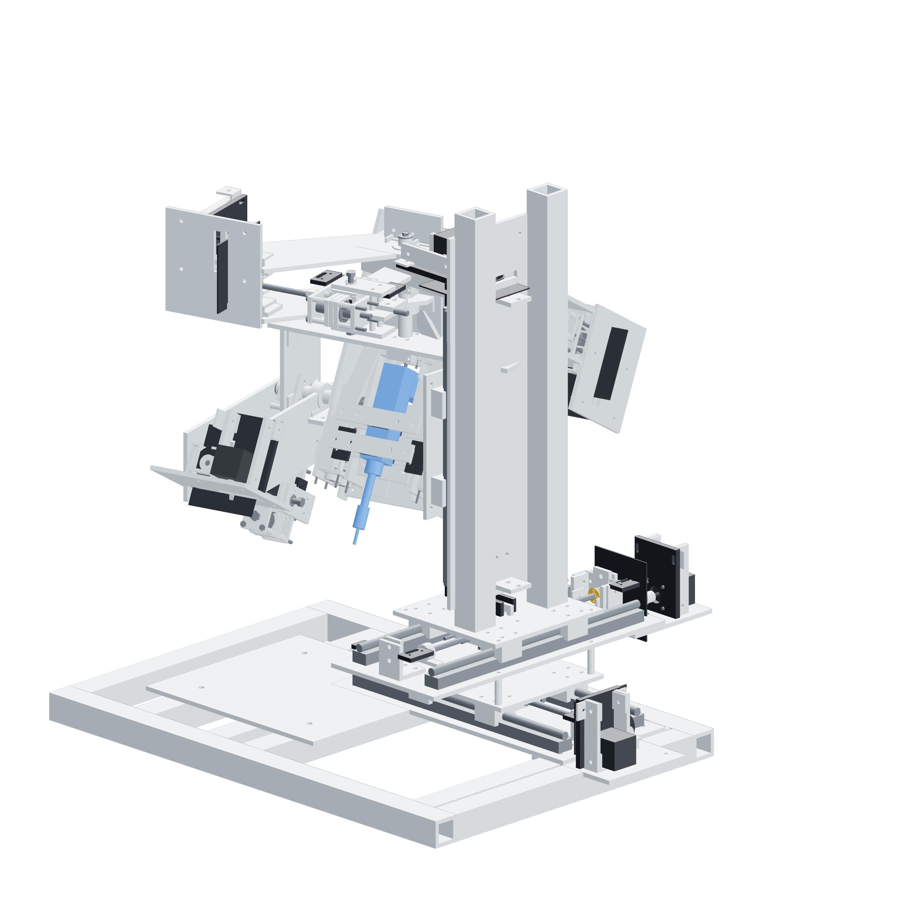

Before assembly02 / 179
One gun, six axes
Three guided translations carry a three-axis gimbal. The existing rotator supplies the tube's circumferential travel.

Dry motion is this build's scope
This kit assembles a mechanism for loaded dry commissioning. Nominal step spacing is 2.5 µm per full motor step. Attained 5 µm motion and live weld tracking require observed results. The controller has no laser, wire-feed or rotator output.